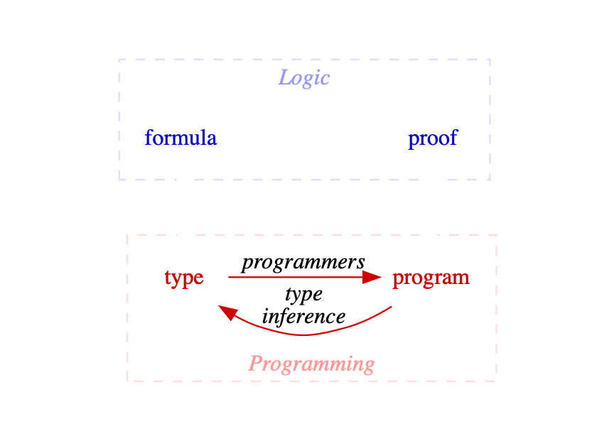

sealed trait Formula
object Formula {
sealed trait Atomic extends Formula (1)
case object True extends Atomic
case object False extends Atomic
case class Type(name: String) extends Atomic
case class And(fst: Formula, snd: Formula) extends Formula
case class Or(inl: Formula, inr: Formula) extends Formula
case class Implies(from: Formula, to: Formula) extends Formula
}You Didn’t Know It, but You Really Want to Learn Sequent Calculus
Adam Rosien @arosien
Inner Product LLC inner-product.com
ò‚Äø ò |
(｡◕‿◕｡) |
Sequents? Proofs? | ( Õ°‡≤† ñÃØ Õ°‡≤†) |
Fake it 'til you make it! | (ᵔᴥᵔ) | |
Our Goal
given a type signature,
automatically derive a program


Types ⇒ Formulas
| Type | Formula |
|---|---|
| ‚ä§ üîä "true" |
| ⊥ üîä "false" |
|
|
|
|
|
|
|
|
TODO: type params, universals, existentials.
Reification Algebraic Data Type
Example: Type ⇒ Formula
type Example = (A, Either[B, C])
val example =
Formula.And(
Formula.Type("A")
Formula.Or(
Formula.Type("B"),
Formula.Type("C")))üíØPretty-Printing with Show
implicit val show: Show[Formula] = {
case True => "⊤"
case False => "⊥"
case Type(name) => name
case And(fst, snd) => show"($fst ∧ $snd)"
case Or(inl, inr) => show"($inl ∨ $inr)"
case Implies(from, to) => show"($from ⇒ $to)"
}üíØPretty-Printing with Show
// (A, Either[B, C])
val example =
Formula.And(
Formula.Type("A")
Formula.Or(
Formula.Type("B"),
Formula.Type("C")))
example.show(A ∧ (B ∨ C))
Type ⇒ Formula
trait ToFormula[A] {
def toFormula(): Formula
}Typeclass
Type ⇒ Formula
trait A
trait B
trait C
implicit val toFormulaA = ToFormula.reify[A]
implicit val toFormulaB = ToFormula.reify[B]
implicit val toFormulaC = ToFormula.reify[C]
ToFormula[(A, Either[B, C])].toFormula.show(A ∧ (B ∨ C))
Type ⇒ Formula
implicit def product2[A, B](
implicit toA: ToFormula[A],
toB: ToFormula[B]
): ToFormula[(A, B)] =
() => Formula.And(toA.toFormula(), toB.toFormula())
implicit def sum2[A, B](
implicit toA: ToFormula[A],
toB: ToFormula[B]
): ToFormula[Either[A, B]] =
() => Formula.Or(toA.toFormula(), toB.toFormula())Typeclass Derivation
Formulas ⇒ Proofs
trait Prover[Rule] {
def prove(formula: Formula): Proof[Rule]
}
sealed trait Proof[Rule] // TODOPlease prove this type:
Unit
üîä "Give me a
Unit."
val proof = ()
Please prove this type:
A
üîä "Give me an
A."
val proof = ???
Please prove this type:
A ⇒ A
üîä "If you give me an
A, I’ll give you anA."
val proof = (a: A) ⇒ a
Please prove this type:
(A, B) ⇒ A
üîä "If you give me an
Aand aB,
I’ll give you anA."
val proof = (a: A, _: B) ⇒ a
Please prove this type:
A ⇒ Either[A, B]
üîä "If you give me an
A, I’ll give you anAorB."
val proof = (a: A) ⇒ Left(a)
How did you know how to do that?
Can we teach a computer?
More Complex Formulas
| If we had | Could we produce? | |
|---|---|---|
| no |
↙︎ ↓ extract args | ||
|
| no |
un-pair ↓ | ||
|
| no |
↓ choose | ||
|
| Yes! |
| If we had ⊢ Could we produce? | |
|---|---|
| no |
↓ extract args | |
| no |
↓ un-pair | |
| no |
↓ choose | |
| Yes! |
Sequents
\$Gamma |-- Delta\$ |
|
\$|--\$ |
|
case class Sequent(
premises: List[Formula],
conclusion: Formula)Deduction ↑
\$(A |-- B)/(|-- A => B)\$
üîä "if we conclude \$|-- A => B\$,
then we can presume \$A |-- B\$".
You can also go the other way: Reduction ↓
Inference Rules
\$(Gamma, A |-- B)/(Gamma |-- A ⇒ B)R⇒\$ | |
|
|
case LK.`R⇒` => {
case Sequent(g, Formula.Implies(a, b)) =>
Deduction.Success(
rule,
NonEmptyList.of(Sequent(a :: g, b)))
}A collection of rules is known as a system. | |
Gerhard Gentzen created the LK (klassische Prädikatenlogik) system in 1934. | |
Each rule specifies a possible deduction. | |
A deduction can be stuck, discharged (done), or success (produces one or more new, but simpler, sequents). | |
A prover attempts to prove a sequent. | |
val sequent =
Sequent.conclude[Tuple2[A, B] => Either[A, C]]
Prover[LK].prove(sequent).prune.toTree.show( ⊢ ((A ∧ B) ⇒ (A ∨ C))
(R⇒
((A ∧ B) ⊢ (A ∨ C)
(L∧
(A, B ⊢ (A ∨ C)
(R∨1
(A, B ⊢ A
(Id))))))))\(\dfrac{\dfrac{\dfrac{\dfrac{}{A, B \vdash A}Id}{A, B \vdash A \vee C}R\vee1}{A \wedge B \vdash A \vee C}L\wedge}{\vdash A \wedge B \Rightarrow A \vee C}R\Rightarrow\) | ( ⊢ ((A ∧ B) ⇒ (A ∨ C))
(R⇒
((A ∧ B) ⊢ (A ∨ C)
(L∧
(A, B ⊢ (A ∨ C)
(R∨1
(A, B ⊢ A
(Id)))))))) |
Remember everybody, only in computer science do trees grow upside-down!
Proofs ⇒ Programs
Basic Idea: Fold Proofs into Programs
| If we had | Could we produce? | |
|---|---|---|
|
| |
↙︎ ↓ extract args | ↑ | |
|
| ↑ |
un-pair ↓ | ↑ | |
|
|
|
↓ choose | ↑ | |
|
|
|
(∩｀-´)⊃━☆ﾟ.*･｡ﾟ
// TODO: "Simply Typed Lambda Calculus" ADT and intepreter
// TODO: macro to build programs at compile-time.
Summary
While not originally popular with t-shirt collectors in 1934, sequent calculus is definitely cool. |
Curry-Howard lets us translate our programming problems into logic problems, and back. And logic problems are solved with sequent calculus. |
type ⇒ program in 3 Steps
type ⇒ formula | reification |
formula ⇒ proof | reification |
proof ⇒ program | interpreter |
Thank you!
Adam Rosien @arosien
Inner Product LLC inner-product.com
Hire us to teach your team! ☝︎
References and Links